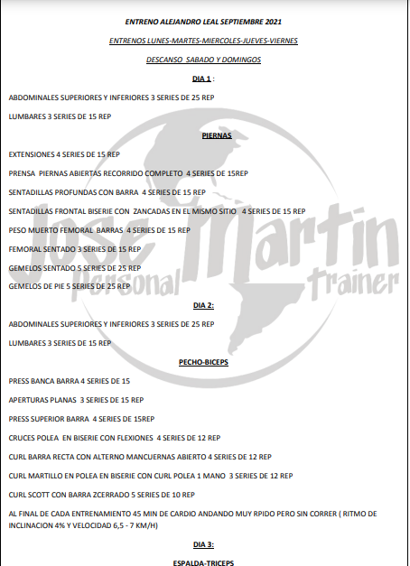

Ganar masa muscular no es un proceso difícil, pero desde luego sí que es un proceso lento. Evidentemente, con esto no pretendemos desmotivarte, pero sí que queremos ser transparentes con respecto a los resultados que puedes conseguir. Si este sigue siendo tu objetivo, te presentamos una rutina de tres días que podrá ayudarte a conseguirlo.

Las rutinas de definición tienen como objetivo perder la mayor parte de grasa corporal pero manteniendo la mayor cantidad de músculo posible. Incluso en algunos casos es posible seguir ganando músculo mientras perdemos grasa, algo muy fácil de conseguir para los principiantes. La mayoría de las personas que realizan trabajo con pesas se pasan la mayor parte del año realizando rutinas de volumen o rutinas de fuerza.